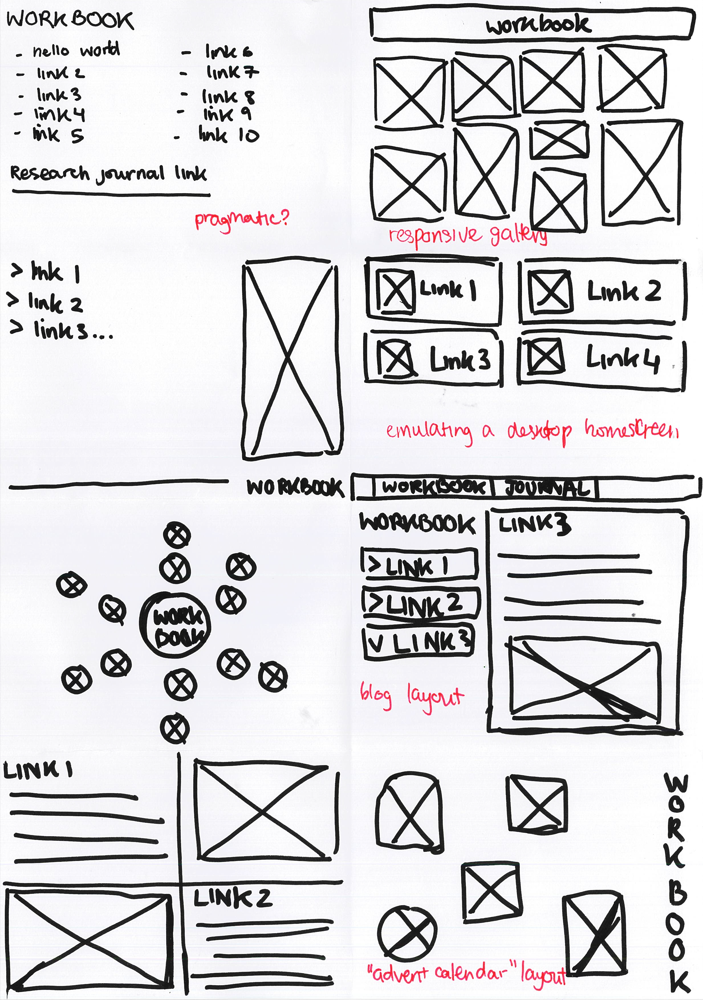

To sketch prototypes for this workbook, I followed the "crazy eights" ideation method, which involved sketching eight ideas in eight minutes. However, I did not realise that this workbook would be developed into a fully interactive website and that mobile compatibility was not a concern, so my initial sketches were relatively simple static pages.
I followed with some sketches of website ideas with other interactive components, largely based on simple video games (such as snake or a basic shooter). I decided to further develop of the concept of a space-themed shooter where different targets were different links, as I felt it was feasible to implement.